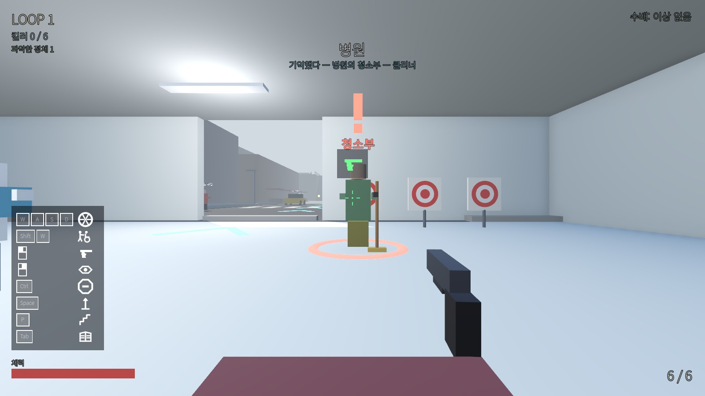

굴리면 못 쏜다
도망치려면 굴려야 하고, 쏘려면 손을 떼야 합니다. 엄마가 밀어 주면 빠르게 달리면서도 쏠 수 있고, 급정지와 점프, 계단 오르기, 난간 타기까지 함께합니다.

Prototype 03
굴리는 동안에는 쏠 수 없다. 그러니까, 엄마! 밀어!
개발 중인 프로토타입 빌드가 새 창에서 열립니다. 키보드와 마우스로 플레이하며, 화면을 한 번 클릭하면 시점이 잡힙니다.
Overview
병원에서 깨어난 휠체어 킬러가 마을 곳곳에 숨은 암살자들을 찾아냅니다. 죽을 때마다 정체를 기억해 가며, 모든 킬러를 제거한 뒤 탈출 지점까지 도달해야 합니다.
휠체어를 직접 굴리는 동안에는 총을 쏠 수 없습니다. 멈추거나, 관성으로 굴러가거나, 엄마가 밀어 줄 때만 쏠 수 있습니다. 엄마는 두 번째 플레이어가 직접 조작할 수도 있습니다.
Key Features
도망치려면 굴려야 하고, 쏘려면 손을 떼야 합니다. 엄마가 밀어 주면 빠르게 달리면서도 쏠 수 있고, 급정지와 점프, 계단 오르기, 난간 타기까지 함께합니다.
청소부, 조깅하는 사람, 택시 운전사, 피자 배달부, 창가의 주민. 일곱 종류의 킬러가 평범한 시민 사이에 섞여 있습니다. 같은 차림의 진짜 민간인도 있습니다.
킬러 배치는 판마다 고정입니다. 죽으면 병원으로 되돌아가지만 알아낸 정체는 남아서, 다음 루프에는 그 킬러의 머리 위에 표식이 붙습니다.
민간인을 쏘면 경찰, SWAT, 헬기, 전투기가 차례로 출동합니다. 난장판을 벌이는 게임이 아니라, 난장판을 벌이면 끝나는 게임입니다.
Gallery
개발 중인 프로토타입의 실제 화면입니다. 임시 그래픽이며, 이미지를 누르면 크게 볼 수 있습니다.